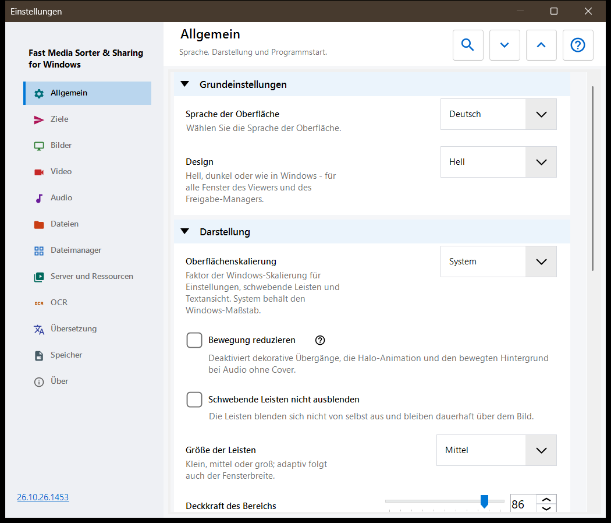
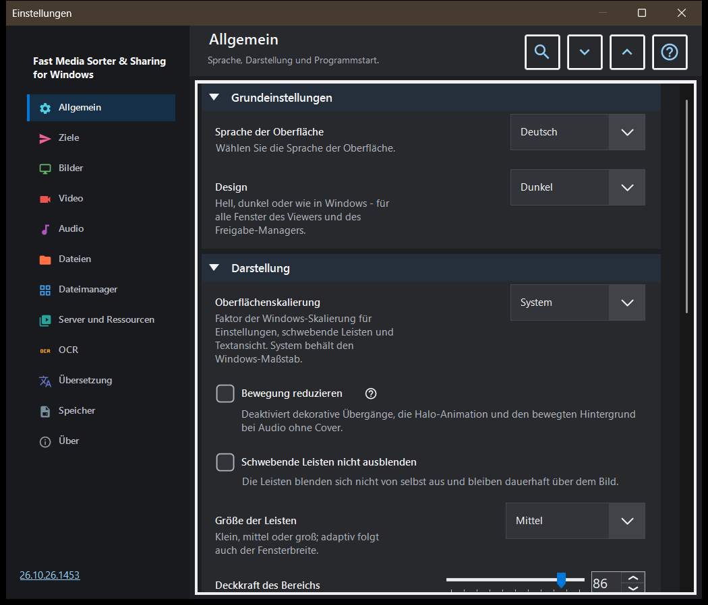

Einstellungen
Einstellungen
Verwendungszweck
Das Fenster Einstellungen enthält alle Optionen des Viewers. Es öffnet sich mit F2, über die Schaltfläche «Einstellungen» der Symbolleiste oder aus dem Dateimanager der Bildleiste über dessen Schaltfläche «Einstellungen..», die direkt zur Seite Dateimanager springt. Die Seiten stehen links in einer Seitenleiste, und die Gruppen einer Seite lassen sich zuklappen.


In dieser Reihenfolge
- Wählen Sie in der Seitenleiste eine Seite oder geben Sie in «Einstellungen suchen» ein Wort ein, um eine Option zu finden.
- Mit «Alle aufklappen» und «Alle zuklappen» öffnen oder schließen Sie alle Gruppen der Seite.
- Ändern Sie die gewünschten Optionen.
- Drücken Sie Esc, um das Fenster zu schließen.
Die Elemente
Allgemein
Sprache und Design, dann das Aussehen der schwebenden Leisten: Oberflächenskalierung, reduzierte Bewegung, Fixieren, Größe, Deckkraft, Ecken, die Info-Einblendung und das Ausblenden des Mauszeigers; die Schaltfläche «Leisten an ihre Plätze zurücksetzen» stellt alle verschobenen Leisten an ihren üblichen Platz zurück. Die Gruppe Start legt fest, was beim Start geschieht (beim Start öffnen, mit der letzten Datei fortfahren, neue Fenster erlauben), und enthält «Die Willkommensschritte erneut anzeigen», was die Ersteinrichtung wieder öffnet. Die Gruppe Erweiterte Einstellungen exportiert und importiert die zusätzlichen Einstellungen und stellt die Standardwerte wieder her.
Ziele
Die zehn Ordner, in die die Tasten 1-9 und 0 eine Datei verschieben; Shift mit einer Ziffer der oberen Tastenreihe kopiert in denselben Ordner. Die Tabelle hat eine Zeile pro Taste: Wählen Sie eine Zeile und verwenden Sie dann «Ein Ordner auf diesem PC..», «Ressourcen» (ein SFTP- oder SMB-Ordner) oder «Leeren», oder ziehen Sie einen Ordner auf die Zeile. Die Gruppe Darstellung der Zieltabelle legt Position, Breite, Textgröße, Deckkraft und sichtbare Zeilen der über dem Bild angezeigten Tabelle fest, und «Zieltabelle über dem Bild» schaltet diese Tabelle ein oder aus.
Bilder
Wie Bilder geöffnet werden und aussehen: Maßstab eines neuen Bildes, automatische Drehung nach dem EXIF-Tag, «Zoomen mit dem Mausrad», animierte Grafiken über den Videoplayer sowie Angaben zu Bildgröße, Dateigröße und Datum. Bildhintergrund legt die Farbe um ein Bild fest, dazu den Perspektivischen Hintergrund und den Halo (dynamisch, animiert, Geschwindigkeit). Verhalten der Diashow legt das Intervall und die zufällige Reihenfolge fest, ob manuelles Blättern die Show anhält und was die Oberfläche währenddessen tut. Der erweiterte Teil enthält hochwertige Skalierung und die Größe der Vorschaubild-Karte.
Video
Ob Videodateien am Durchblättern teilnehmen, automatische Wiedergabe, die Aktion am Ende eines Clips, das Merken der Position und «Gemeinsamer Ton: Audio und Video». Weitere Gruppen enthalten die bevorzugten Sprachen für Audio und Untertitel sowie die Wiedergabesteuerung: was ein einzelner Klick bewirkt, die Verzögerung der Steuerelemente, Steuerelemente bei Pause und drei Sprungschritte.
Audio
Ob Audiodateien am Durchblättern teilnehmen, die Aktion am Ende eines Titels, die Standardlautstärke und Stumm starten. Die Gruppe Info und Steuerung enthält die immer sichtbare Audioleiste, die Visualisierung für Dateien ohne Cover und den Sleep-Timer.
Dateien
Umgang mit Dateien: nach dem Kopieren weiterschalten, was bei einem Namenskonflikt und nach dem Kopieren oder Verschieben geschieht, die Statuszeile bei Dateivorgängen, das Anlegen eines fehlenden Zielordners, «In den Papierkorb löschen» und die Löschbestätigung. Dateitypen umfasst Unterordner, Erweiterungen, Dokumente, die Größe der Textvorschau und andere Dateien. Weitere Gruppen legen die zuletzt verwendeten Dateien und Ordner, die Archivgrenzen und die geschützten .fd-sec-Dateien fest. Tasten und Zuordnungen enthält die Schaltfläche «Tastenkombinationen», die das Fenster mit den Hotkeys öffnet, und die Dateizuordnungen für Bilder und Videos.
Dateimanager
Optionen des Dateimanagers der Bildleiste: Anzeigemodus (Kacheln oder Liste), Inhaltsfilter, ausgeblendete Dateien und die Aktion für Dateien, die keine Medien sind. Die Gruppe Orte wählt, welche Orte angezeigt werden (lokal, Ressourcen, Geräte), und enthält «Sortierung merken».
Server und Ressourcen
Die Liste Server und Netzwerkordner enthält die SFTP- und SMB-Ressourcen, die der Viewer durchsuchen und als Ziele nutzen kann. Die Gruppe Android / SFTP dient dazu, Ordner dieses PCs per SFTP für die Android-App zu veröffentlichen; sie enthält die Verbindungsanleitung und die Schaltfläche «SFTP-Server für den Android-Client verwalten..». Jeder Eintrag eines Austauschservers hat «Als STANDARD speichern..» und «STANDARD lesen..», solange er verbunden ist und sein Server einen Einstellungs-STANDARD speichert: Das Erste speichert die angehakten Einstellungsgruppen auf dem Server als STANDARD Ihres Kontos, das Zweite übernimmt die Werte der angehakten Gruppen auf diesen Computer. Pfade, Passwörter, Schlüssel und Fenstergrößen bleiben auf diesem Computer, der Betreiber des Servers kann einen STANDARD lesen, und spätere Änderungen hier bleiben lokal, bis Sie den STANDARD erneut lesen.
OCR
«OCR aktivieren» schaltet die Texterkennung ein, und «Automatisch ausführen» lässt sie von selbst laufen. Die Gruppe Texterkennung legt Ausgangssprache, Qualität, Modus und den Download der Sprachdaten fest.
Übersetzung
Wählen Sie den Dienst («Übersetzungsdienst») und die Zielsprache («Zielsprache»); weitere Felder enthalten die Dienstadresse, den lokalen Ollama-Server, das Modell und den API-Schlüssel. Die Gruppe Übersetzung über dem Bild legt Deckkraft und Sichtbarkeit des Übersetzungsbereichs über dem Bild fest.
Speicher
Cache-Grenzen mit einer Schaltfläche zum Leeren für jeden Cache: decodierte Bilder, Vorschaubilder der Bildleiste, Archive und Netzwerkressourcen. Der OCR-Festplattencache hat «Ergebnisse auf der Festplatte zwischenspeichern», eine eigene Grenze und eine Schaltfläche zum Leeren.
Über
Produktinformationen und Links: Updates, Einstellungen zurücksetzen, Verwandte Projekte, Hilfe zum Programm, Projekt-Website, GitHub, Veröffentlichungen, Datenschutzerklärung, MIT-Lizenz und Drittanbieter-Komponenten und Lizenzen. «Protokolle an den Autor senden» zeigt einen Zustimmungsdialog, der auflistet, was ins Archiv kommt, und übergibt es dann an Ihr Mailprogramm; das Programm öffnet dafür keine Netzwerkverbindung.
Dokumente
Aktivieren Sie den PDF-Reader unabhängig von den Sortierfiltern. Wählen Sie Einzel-, fortlaufende oder Doppelseiten, Farben, Zoom, Suchbereich und Cachegrenzen. Seitentasten wechseln Seiten, Dateitasten Dateien. Textelemente besitzen B/N, Ziffern und Entf; Esc kehrt zur Ansicht zurück. Das Zurücksetzen der Darstellung erhält Positionen und benannte Lesezeichen. Vorlesen verwendet installierte Windows-Stimmen. Passwörter bleiben in der Sitzung. Eine lokale temporäre Kopie hält das Original verschiebbar. Der normale Einstellungsexport lässt Verlauf, Lesezeichen und Dokumentanpassungen aus. Textdateien haben eigene Gruppen. «Vollständiges Lesen von Textdateien» öffnet sie mit Schriften, Designs, Zeilennummern und Suche; eine Datei über der Bearbeitungsgrenze wird in Teilen gelesen. «Textdateien bearbeiten» ergänzt Ctrl+E: Beim Speichern bleibt die Kodierung erhalten, und ungespeicherte Änderungen liegen in einem verschlüsselten Entwurf. «Als Text öffnen» im Menü einer Datei zeigt jede andere Datei als Text.